Lifespan approaches to network neuroscience
Elizabeth DuPre
Montreal Neurological Institute
12 February, 2018
Open data supports "Big Data"
- Lets us ask questions we would otherwise be unable to due to:
- Lack of statistical power
- Lack of resources
- Lack of time
How do structural covariance networks change across the lifespan?
Motivating Questions
- Why take a lifespan approach?
- What are structural covariance networks?
- How do structural covariance networks change across the lifespan?
Value of a lifespan approach
- Characterize the life cycle of neurocognitive networks
- Assess inter-individual differences (in cognition, behavior) across developmental periods
- Define "growth charts" for brain structure, function for use in medical contexts
Zuo et al. (2017)
Motivating Questions
- Why take a lifespan approach?
- What are structural covariance networks?
- How do structural covariance networks change across the lifespan?
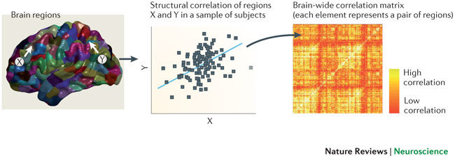
Structural Covariance
Alexander-Bloch, Giedd, & Bullmore (2013)
Structural Covariance Networks
Seeley et al. (2009)
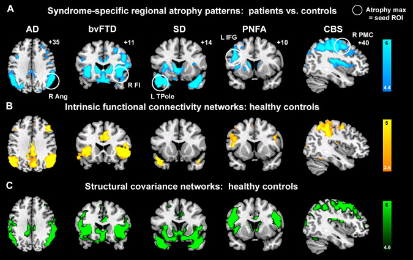
- Gray matter volumes show significant declines with age (Low & Cheng, 2006)
- Rate of decline not uniform across brain regions (Raz et al., 2005)
Age-Related Changes in Structure
Modified from Zielinski et al (2010)
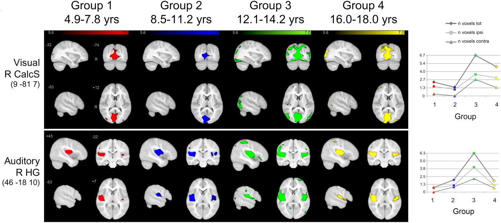
Motivating Questions
- Why take a lifespan approach?
- What are structural covariance networks?
- How do structural covariance networks change across the lifespan?
- Characterize expression of structural covariance networks across the lifespan
- Better understand normative changes in structural covariance patterns with age
Present Study Aims
Participants
- Five open access data sources (ADNI, HCP, NIH-Peds, NKI-RS, OASIS)
- 1580 participants, 6-94 years of age (659 males)
- Considered in six age groups, approximating developmental periods
Deriving Structural Measurements
- Voxel-based morphometry (VBM) MATLAB toolbox (Ashburner & Friston, 2000)
- Segments images into tissue classes (gray and white matter, cerebrospinal fluid)
- Gray matter images were non-linearly aligned to a study-specific template
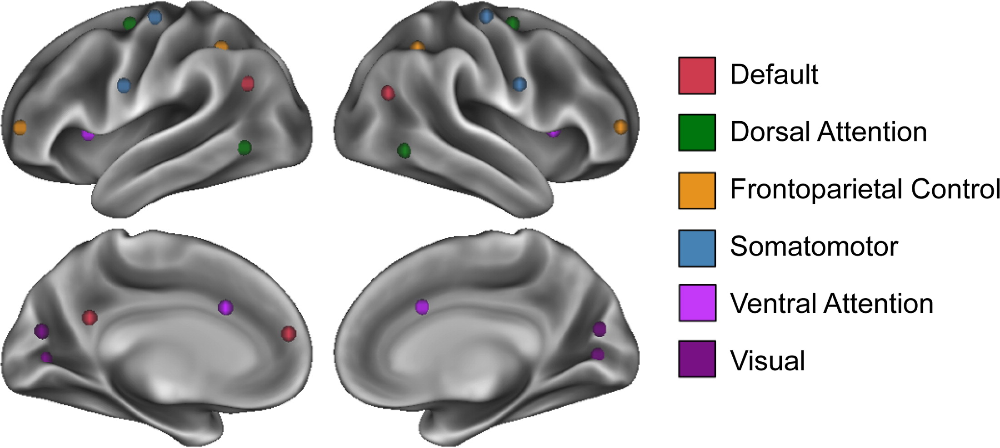
Network definition
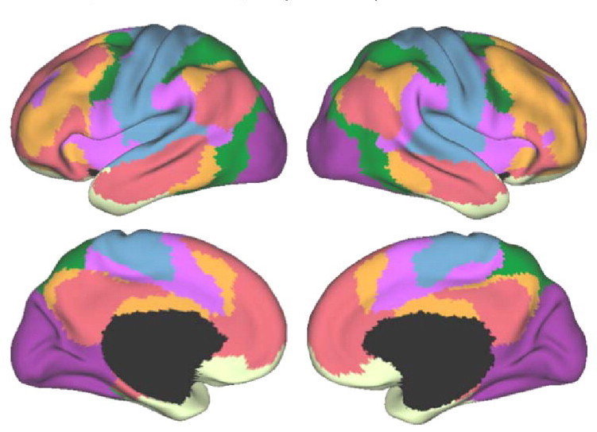
Modified from Yeo et al. (2011)
Network definition
Partial Least Squares (PLS)
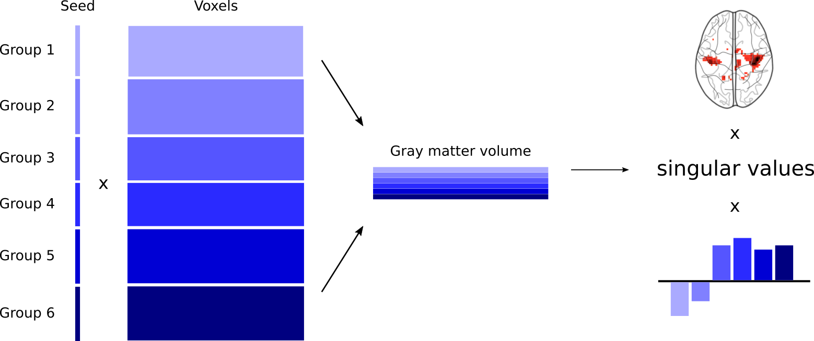
{Y_{1..6}}^TX_{1..6}=Z_{1..6}
Z_{1..6} = U\Delta{V}^T
L = X_{1..6}V
Partial Least Squares (PLS)
(1)
(2)
(3)
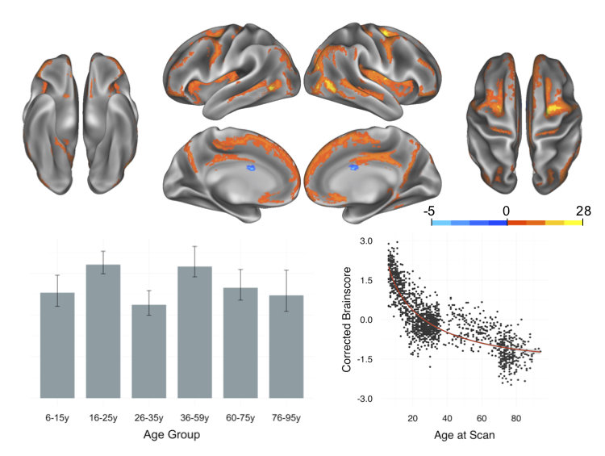
Dorsal Attention Network
1st Latent Variable
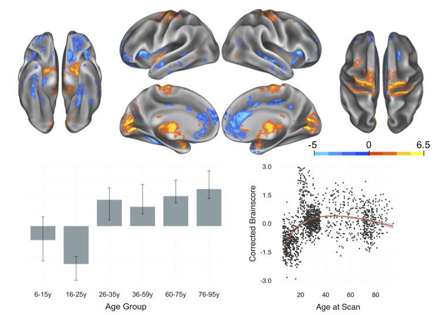
Dorsal Attention Network
2nd Latent Variable
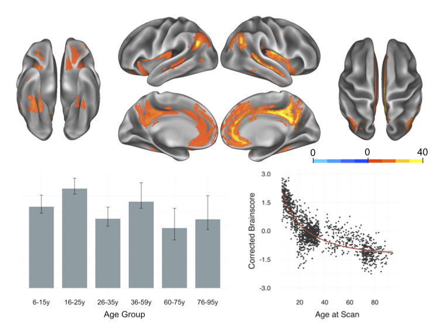
Default Network
1st Latent Variable
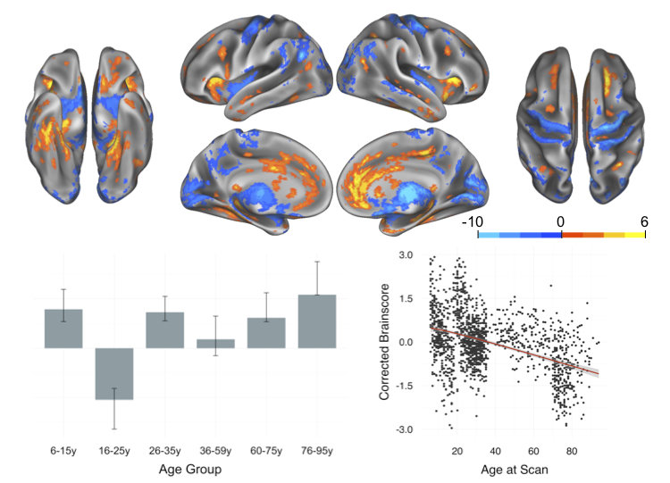
Default Network
2nd Latent Variable
Results Summary
| Network |
1st Latent Variable | 2nd Latent Variable |
|---|---|---|
| Dorsal Attention | Non-linear decline | Inverted U-shape |
| Frontoparietal Control | Non-linear decline | Inverted U-shape |
| Somatomotor | Non-linear decline | Inverted U-shape |
| Default | Non-linear decline | Linear decline |
| Ventral Attention | Non-linear decline | Linear decline |
| Visual | Non-linear decline | N/A |
- A consistent, nonlinear decline
- An inverted U-shape, with peak integrity in middle adulthood
- The expression of this patterns seems dependent on hub regions
Trajectories of Structural Covariance
Relationship to Functional Connectivity
- Decreasing within-network connectivity with age (Betzel et al., 2014)
- Functional integration and subsequent dedifferentiation with age (Collin & van den Heuvel, 2013)
Sources of Structural Covariance
- Recent work suggests that structural covariance networks may share genetic similarities (Alexander-Bloch et al., 2017; c.f., Romero-Garcia et al., 2017)
- Exploring multi-modal networks in large, lifespan samples (e.g., UK Biobank; Liem et al., 2017)
- Considering a lifespan perspective with small, richly sampled datasets (e.g., Study Forrest)
Future Directions
Thank you to...

Nathan Spreng
Lab of Brain & Cognition
Data sources
...and you for listening!
-
Open data allows us to ask "big" questions
-
Structural covariance networks show similar age-related patterns to functional networks
- Lifespan approach may provide novel information
DuPre, E., Spreng, R.N. (2017). Structural covariance networks across the lifespan, from 6-94 years of age. Network Neuroscience, 1, 302-323.
Take Home Ideas:
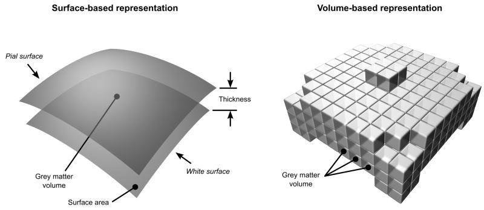
Cortical Thickness vs. Grey Matter Volume
Winkler et al (2010)
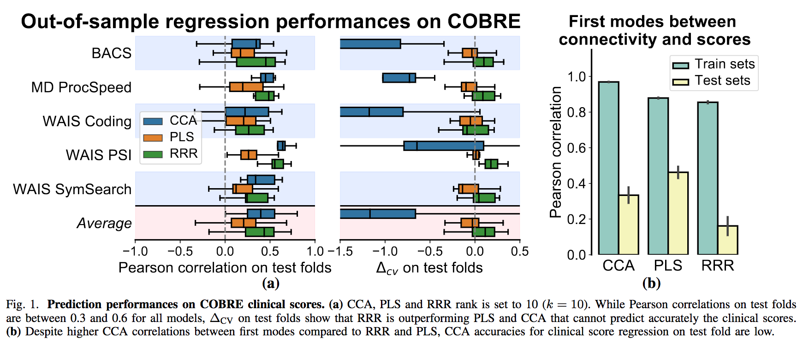
Partial Least Squares Prediction Accuracy
Rahim, Thirion, & Varoquaux (2010)
Modified from Kelly et al (2012)
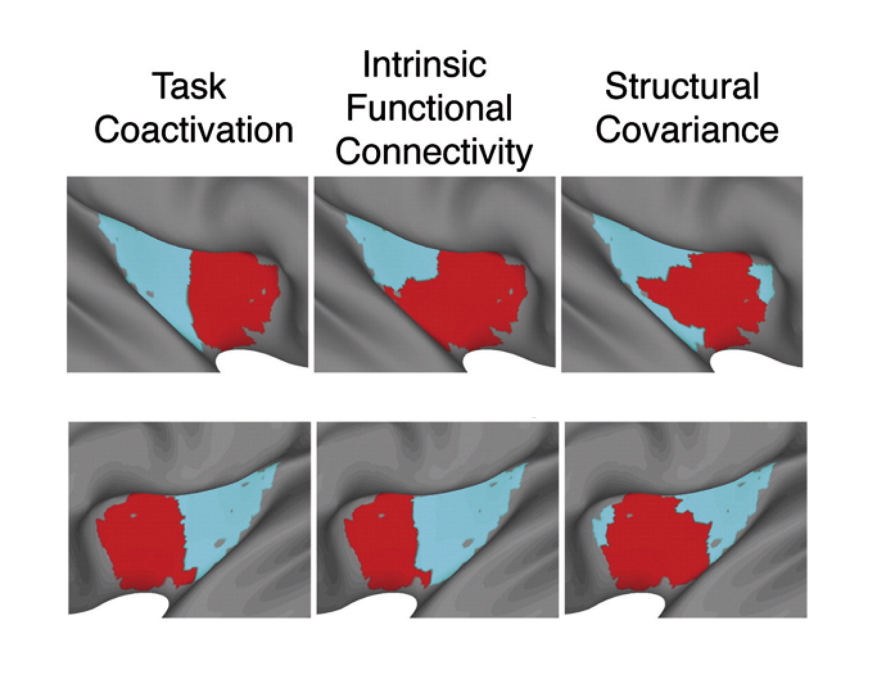
RH
LH
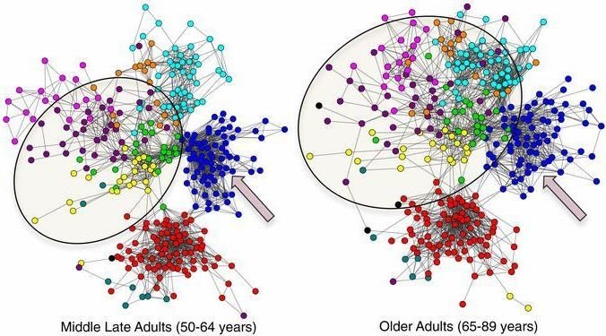
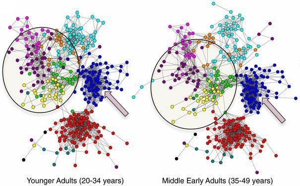
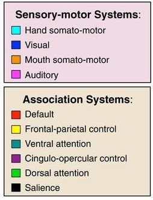
Modified from Chan et al (2014)